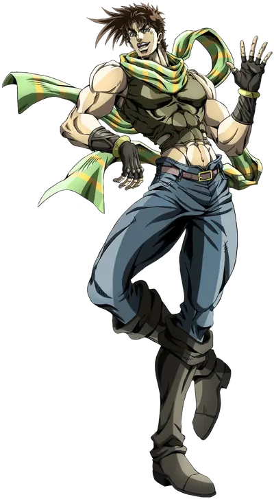
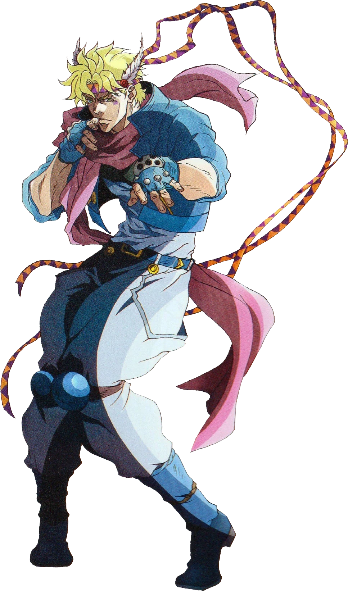
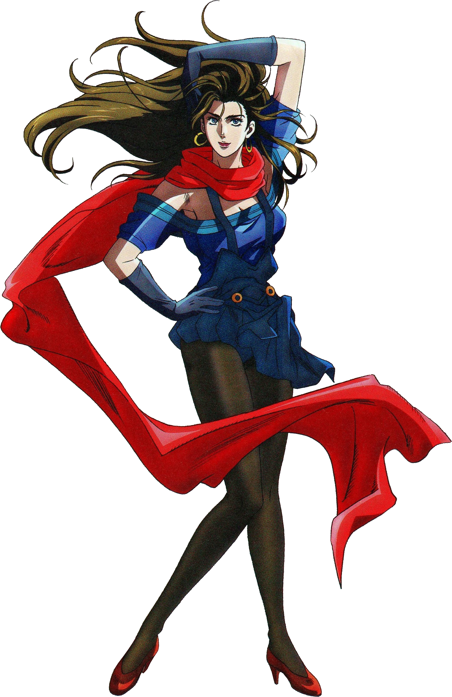
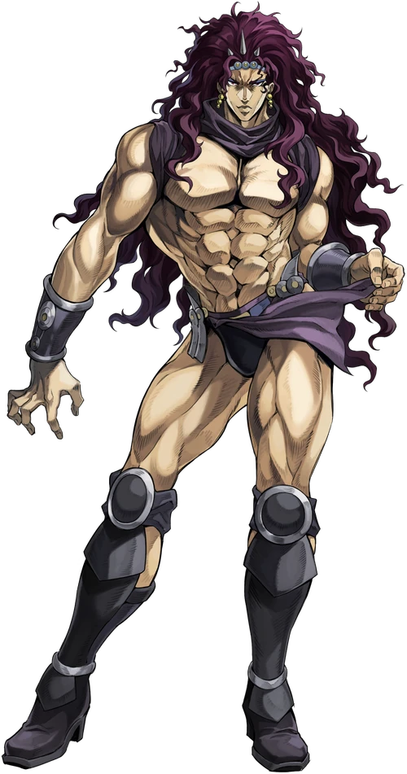
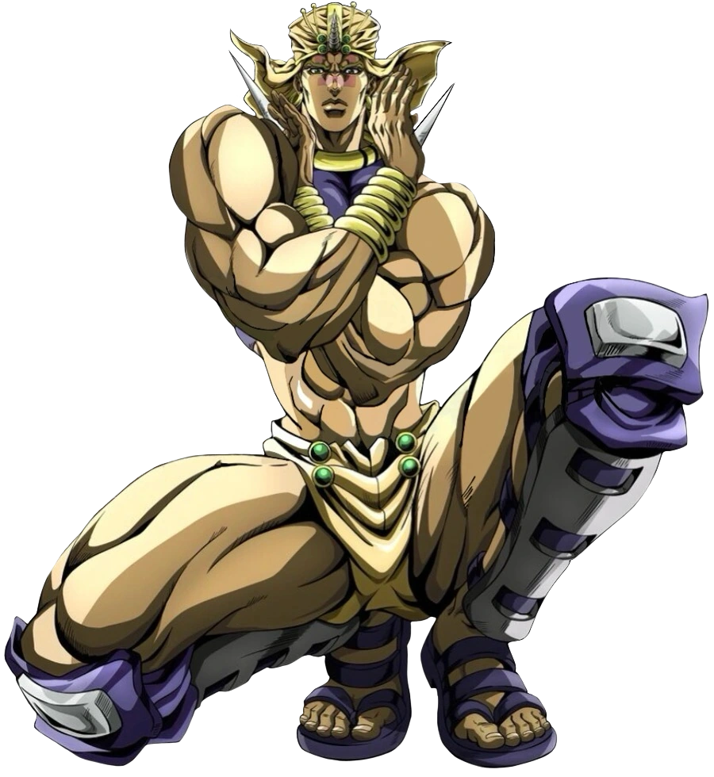
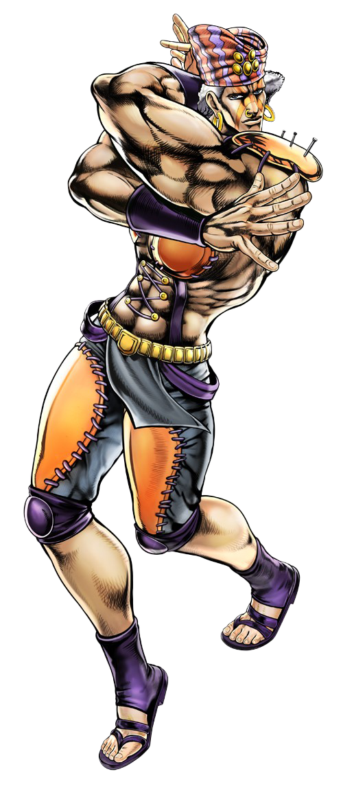
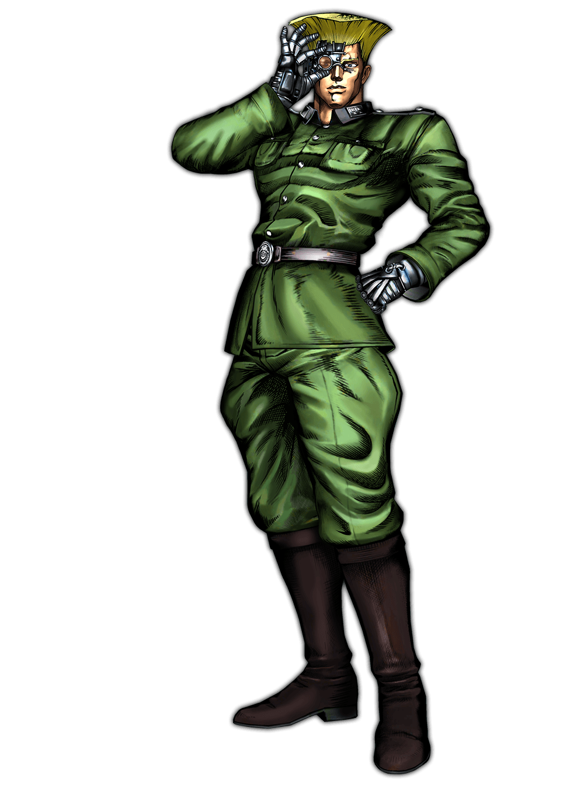

Joseph Joestar é o protagonista da Parte 2 (Battle Tendency). Ele é o neto de Jonathan Joestar e possui uma personalidade muito diferente de seu avô: Joseph é esperto, brincalhão e usa estratégias inesperadas nas batalhas. Durante a história, ele treina o uso do Hamon para lutar contra os poderosos Homens do Pilar, seres antigos extremamente fortes. Com sua inteligência e criatividade, Joseph consegue derrotar inimigos muito mais poderosos que ele e acaba se tornando um grande herói.

Caesar Anthonio Zeppeli é um aliado importante de Joseph. Ele também domina o Hamon e vem da família Zeppeli. No começo ele e Joseph não se dão muito bem, mas com o tempo se tornam grandes amigos e parceiros de batalha. Caesar é orgulhoso e determinado, e luta para honrar o legado de sua família.

Lisa Lisa é a mestra de Hamon que treina Joseph e Caesar. Ela é uma lutadora extremamente habilidosa e muito respeitada. Lisa Lisa é calma e séria, mas também muito poderosa, sendo uma das maiores usuárias de Hamon da série.

Lisa Lisa é a mestra de Hamon que treina Joseph e Caesar. Ela é uma lutadora extremamente habilidosa e muito respeitada. Lisa Lisa é calma e séria, mas também muito poderosa, sendo uma das maiores usuárias de Hamon da série.

Wamuu é um dos poderosos Homens do Pilar e o guerreiro mais honrado entre eles. Ele luta usando técnicas de vento extremamente destrutivas. Apesar de ser um inimigo, Wamuu respeita guerreiros fortes e demonstra grande honra nas batalhas. Ele enfrenta Joseph Joestar em uma luta intensa para provar quem é o verdadeiro guerreiro.

Esidisi é outro membro dos Homens do Pilar e aliado de Kars. Ele possui habilidades especiais que permitem controlar o calor do próprio corpo, tornando seu sangue extremamente perigoso. Esidisi é conhecido por sua personalidade instável e dramática, alternando entre raiva intensa e emoções exageradas durante as batalhas.

Rudol von Stroheim é um oficial alemão que inicialmente aparece como antagonista. Depois de um encontro com os Homens do Pilar, ele acaba se tornando um aliado de Joseph. Após sofrer ferimentos graves, Stroheim é reconstruído como um ciborgue, ganhando armas poderosas em seu corpo. Mesmo com seu comportamento exagerado, ele ajuda Joseph na luta contra Kars.
